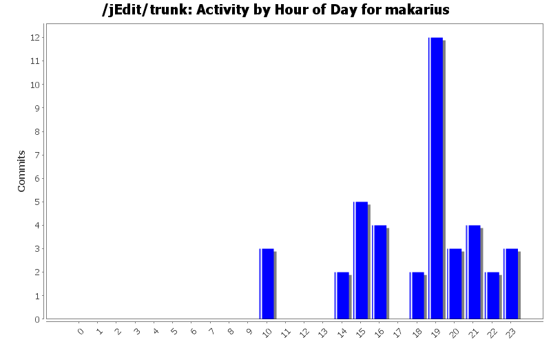
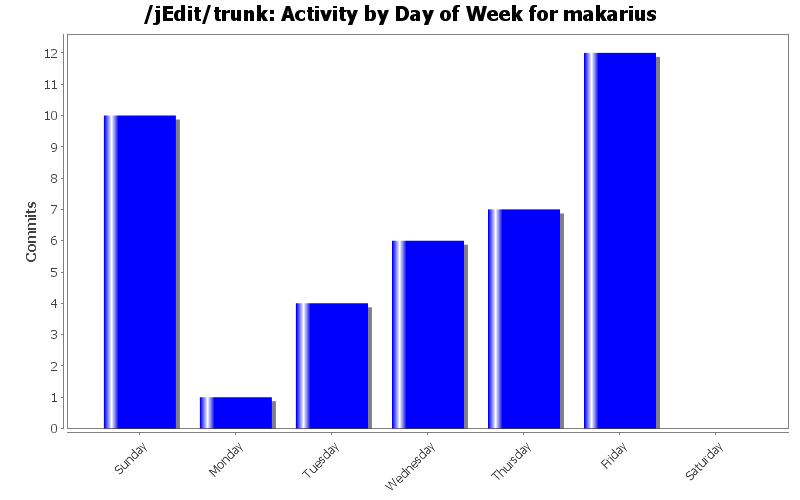

| Directory | Changes | Lines of Code | Lines per Change |
|---|---|---|---|
| Totals | 40 (100.0%) | 178 (100.0%) | 4.4 |
| org/gjt/sp/jedit/ | 5 (12.5%) | 90 (50.6%) | 18.0 |
| org/gjt/sp/jedit/gui/ | 12 (30.0%) | 27 (15.2%) | 2.2 |
| org/gjt/sp/jedit/menu/ | 6 (15.0%) | 18 (10.1%) | 3.0 |
| org/gjt/sp/jedit/buffer/ | 1 (2.5%) | 14 (7.9%) | 14.0 |
| org/gjt/sp/jedit/pluginmgr/ | 3 (7.5%) | 11 (6.2%) | 3.6 |
| doc/ | 2 (5.0%) | 5 (2.8%) | 2.5 |
| org/jedit/migration/ | 1 (2.5%) | 2 (1.1%) | 2.0 |
| org/jedit/keymap/ | 1 (2.5%) | 2 (1.1%) | 2.0 |
| org/gjt/sp/jedit/textarea/ | 2 (5.0%) | 2 (1.1%) | 1.0 |
| org/gjt/sp/jedit/gui/statusbar/ | 1 (2.5%) | 2 (1.1%) | 2.0 |
| org/jedit/options/ | 1 (2.5%) | 1 (0.6%) | 1.0 |
| org/gjt/sp/jedit/syntax/ | 1 (2.5%) | 1 (0.6%) | 1.0 |
| org/gjt/sp/jedit/print/ | 1 (2.5%) | 1 (0.6%) | 1.0 |
| org/gjt/sp/jedit/browser/ | 1 (2.5%) | 1 (0.6%) | 1.0 |
| / | 1 (2.5%) | 1 (0.6%) | 1.0 |
| keymaps/ | 1 (2.5%) | 0 (0.0%) | 0.0 |

Sorted storeProperties that works both for Java 8 and 9.0.1.
7 lines of code changed in 1 file:
Accept version "1.9" as produced by Oracle JDK 9.0.1 on Ubuntu 16.04.
1 lines of code changed in 1 file:
Proper scalable font for StyleEditor, according to Patch #558 and SVN version 23921.
5 lines of code changed in 1 file:
Make double-sure that JEditorPane.HONOR_DISPLAY_PROPERTIES is enabled: this is important for proper font size provided by platform GUI framework (e.g. on HiDPI displays).
1 lines of code changed in 1 file:
Suppress "options.shortcuts.", which are not shortcuts but options for shortcuts.
2 lines of code changed in 2 files:
Make double-sure that JEditorPane.HONOR_DISPLAY_PROPERTIES is enabled: this is important for proper font size provided by platform GUI framework (e.g. on HiDPI displays).
2 lines of code changed in 1 file:
More uniform text for loaded vs. non-loaded state.
8 lines of code changed in 1 file:
Proper file name.
1 lines of code changed in 1 file:
More robust treatment of token style array index: wrap around instead of throwing an exception.
This does not change the behavior of regular jEdit, but it helps ambitious plugins with their own token marker and extra styles (notably Isabelle).
2 lines of code changed in 2 files:
Removed junk stemming from my own patch #566.
1 lines of code changed in 1 file:
More space in messages.
2 lines of code changed in 1 file:
Proper comment.
1 lines of code changed in 1 file:
Public getLineContext() -- relevant for ambitious plugins with their own token marker, fold handler etc.
14 lines of code changed in 1 file:
More convenient saveAllBuffers: show list of affected files (may be changed by the user), no dialog for empty list.
31 lines of code changed in 1 file:
More accurate font metrics, without any special tricks.
3 lines of code changed in 3 files:
Menu accelerator font according to L&F defaults, with workarounds.
Proper anti-aliasing for menu items.
Scalable distance of menu item shortcuts.
43 lines of code changed in 4 files:
More robust default FontRenderContext: as a blind guess, anti-aliasing is better enabled.
4 lines of code changed in 3 files:
Updated contributors.
1 lines of code changed in 1 file:
Proper font metrics for bottom line, which is relevant for GUI scaling. NB: the font size is *not* changed, since it needs to fit to the bitmap image.
1 lines of code changed in 1 file:
Re-use helpviewer.font for Tip-of-the-Day, which helps GUI scaling (for high resolution displays).
1 lines of code changed in 1 file:
(9 more)